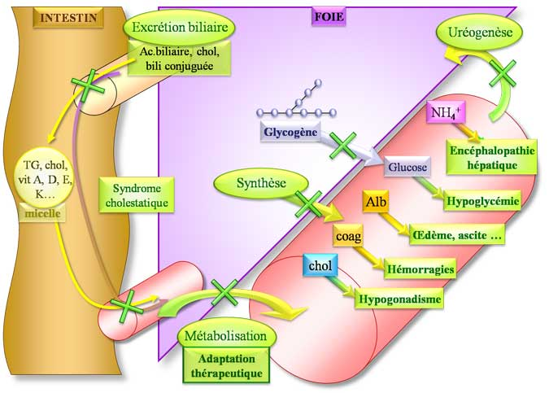

En cas d’insuffisance hépatique aiguë, toutes les fonctions du foie sont défaillantes.
- la diminution des protéines totales et de l’albumine sont responsables d’une diminution de la pression oncotique et donc d’une
fuite liquidienne du milieu vasculaire vers le milieu extra-cellulaire :
formation d’ascite, d’oedèmes …
La diminution de la pression artérielle, l’activation
de systèmes endogènes vasoactifs … sont responsables d’une insuffisance
rénale aiguë fonctionnelle (syndrome hépato-rénal)
- la diminution de synthèse des facteurs de la coagulation entraîne
une diminution du TP et un syndrome hémorragique (le facteur V est le
facteur de la coagulation le plus utilisé pour explorer l’intégrité de la
fonction hépatique)
- la diminution des taux de cholestérol pourrait expliquer
l’hypogonadisme associé à l’insuffisance hépatique (le cholestérol est le
précurseur de la synthèse des hormones sexuelles au niveau des surrénales)
Dans les stades sévères d’insuffisance hépatique, on observe un défaut de régulation de la glycémie provoquant une hypoglycémie.
Les fonctions amines apportées par les protéines ne
peuvent plus être transformées en urée.
Il en résulte une
augmentation de l’ammoniémie pouvant être responsable d’une
encéphalopathie hépatique
Il est nécessaire d’adapter les posologies des
médicaments métabolisés par le foie chez les sujets insuffisants hépatiques.
Il convient d’éviter l’utilisation de médicaments
hépatotoxiques.
Dans les formes graves d’insuffisance hépatique, on observe un syndrome cholestatique : cf syndrome cholestatique.